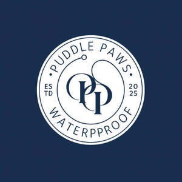

Trade Mark Journal No.2025/049 5 December 2025
UK00004298264 20 November 2025 (18)

- Class 18
- Dog leads; Pet leads; Animal leads; Leads for animals; Training leads for horses; Dog leashes; Dog collars; Raincoats for pet dogs; Dog coats; Dog clothing; Dog apparel; Dog parkas; Cat collars; Animal leashes; Dog waste bag dispensers adapted for use with leashes; Clothing for dogs; Coats for dogs; Collars for cats; Leashes for animals; Horse collars; Collars for pets; Harness; Harness for horses; Harness for animals; Animal harnesses; Bridles [harness]; Reins [harness]; Harness straps; Straps (Harness -); Blinders [harness]; Blinkers [harness]; Bits for animals [harness]; Harnesses for animals; Harnesses; Harness traces; Traces [harness]; Bits [harness]; Fittings (Harness -); Horse halters; Pet clothing; Clothes for animals; Clothing for pets; Pets (Clothing for -); Bags for clothes; Clothing for animals; Clothing for domestic pets; Garments for pets; Pet hair bows; Bags for carrying pets; Nose bags [feed bags]; Bags (Nose -) [feed bags]; Duffel bags; Duffle bags; Tote bags; Grocery tote bags; Bags; Sling bags; Duffel bags for travel; Shoe bags; Nose bags; Animal carriers [bags]; Crossbody bags; Carry-all bags; Cross-body bags; Shoulder bags; Bucket bags; Bags for carrying animals; Belt bags and hip bags; Drawstring bags; Messenger bags; Waterproof bags; Hiking bags; Cloth bags; Canvas bags; Kit bags; Handbag straps; All-purpose carrying bags; Drawstring pouches; Canvas shopping bags; Reins; Lunge reins; Lead reins; Draw reins; Reins for guiding children; Bridles [harnessing]; Horse bridles; Spur straps; Bridles for horses; Collars for animals; Collars of animals; Animal apparel.
Ellie mcgowan